Steward
分享是一種喜悅、更是一種幸福
掌機 - Pandora(Rebirth) - 振動馬達改造
參考資訊：
https://www.openpandora.org/downloads/PANDORA_Hackers_manual_v100.pdf
https://pyra-handheld.com/boards/threads/talking-to-the-gpios-on-the-ext-connector.63146
從Hack文件可以得知目前有許多可用的GPIO腳位，而LED7、LED8更是預留N-FET焊點，剛好司徒手上還有NPN電晶體，因此，這兩個GPIO是最適合用來控制振動馬達，最幸運的地方在於這兩根GPIO開機後都是處於低電位，剛好一顆NPN就可以
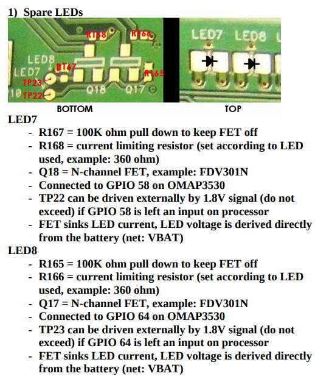
PCB位置
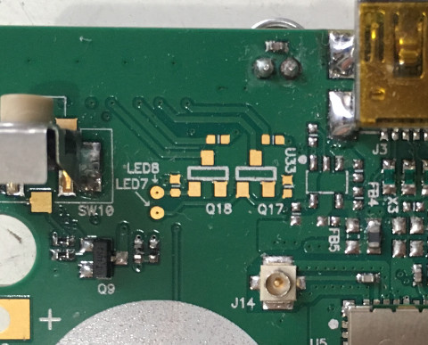
MMBG3904
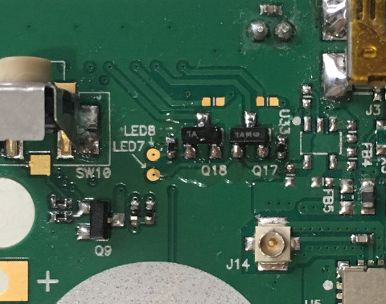
接著找尋擺放振動馬達的位置
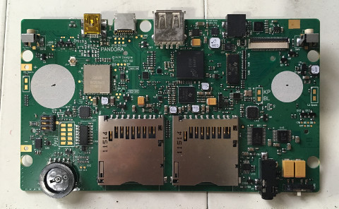
直接使用三秒膠固定
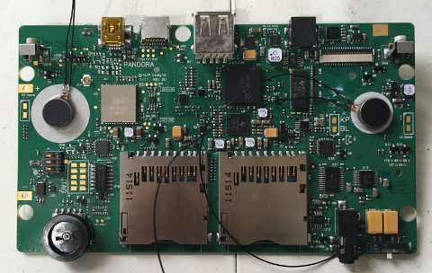
固定後的樣子
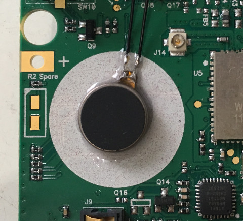
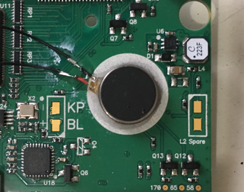
接著焊接限流電阻
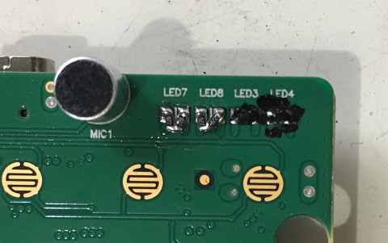
完成跳線
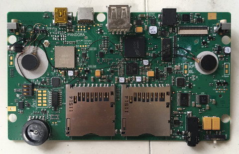
接著挖洞
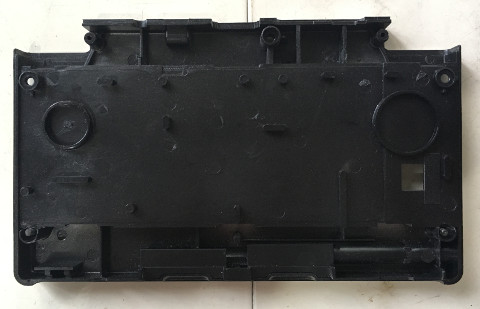
電鑽果然好用
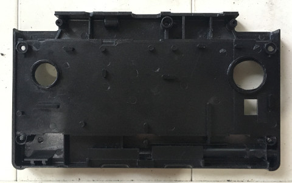
完美改造
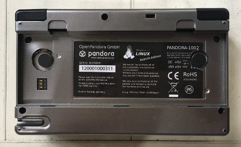
電路圖
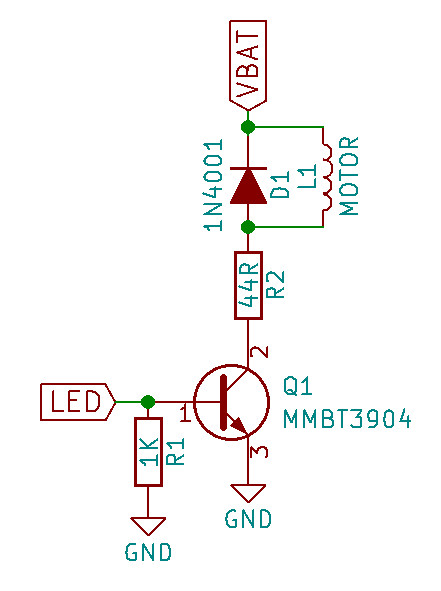
GPIO控制
$ sudo chmod 0777 /sys/class/gpio/export $ sudo chmod 0777 /sys/class/gpio/unexport $ echo 58 > /sys/class/gpio/export $ echo 64 > /sys/class/gpio/export $ sudo chmod 0777 /sys/class/gpio/gpio58/direction $ sudo chmod 0777 /sys/class/gpio/gpio64/direction $ echo "low" > /sys/class/gpio/gpio58/direction $ echo "low" > /sys/class/gpio/gpio64/direction $ sudo chmod 0777 /sys/class/gpio/gpio58/value $ sudo chmod 0777 /sys/class/gpio/gpio64/value $ echo "1" > /sys/class/gpio/gpio58/value $ echo "1" > /sys/class/gpio/gpio64/value $ echo "0" > /sys/class/gpio/gpio58/value $ echo "0" > /sys/class/gpio/gpio64/value $ echo 58 > /sys/class/gpio/unexport $ echo 64 > /sys/class/gpio/unexport